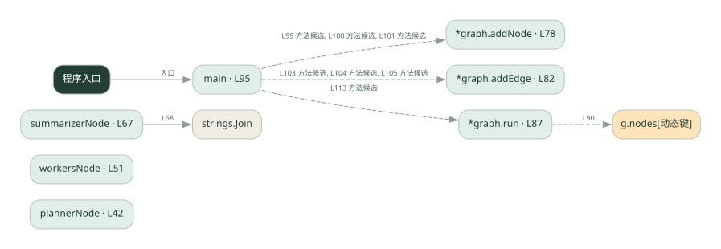

3-2 · 全课程第 42 节
图式工作流
039.go
源码快照 94aad0a4e335 · 静态解析 · 2026-09-10
01 / 要完成的事
用节点表示计划、执行与汇总，用边规定下一步。
02 / 为什么要做
流程复杂后，显式图比散落的条件判断更容易检查。
03 / 当前代码状态
这是自定义 graph 类型，不是 LangGraph SDK。计划与 worker 结果采用演示逻辑，按边顺序运行。
主要展示本地计算、内存状态或模拟流程；是否写文件/启动子进程请看调用表。 本次只做静态解析，没有运行练习，也没有替你填写或修改原代码。
04 / 调用图
打开大图 ↗实线：源码中的直接调用；虚线：函数引用/注册、动态调用或按方法名推断的候选。L 是调用所在源码行号。箭头不表示执行顺序或每次必经；分支、循环、异步调度及框架内部调用需结合源码。灰色是外部/未解析目标，橙色是动态分发；省略 print、len 和常规容器操作以减少干扰。孤立函数可能尚未接入。

先从 main（程序入口） 出发，沿箭头找到本文件函数，再查看外部调用或动态分发。右侧调用清单保留所有静态调用点，能回到原文件逐行对照。
05 / 函数定位
| 函数 / 定义行 | 职责（源码注释） | 内部调用 |
|---|---|---|
plannerNodeL42 | plannerNode：节点 1 —— 拆任务（真系统里调 LLM 拆，这里对演示任务硬编码） | 未发现显式函数调用（可能直接计算、读写状态或尚未实现） |
workersNodeL51 | workersNode：节点 2 —— 逐个执行子任务（真系统里调 LLM，这里硬编码） | append |
summarizerNodeL67 | summarizerNode：节点 3 —— 汇总（把各子任务结果整合成一段） | strings.Join |
*graph.addNodeL78 | 以源码函数体为准；下列调用展示其依赖。 | 未发现显式函数调用（可能直接计算、读写状态或尚未实现） |
*graph.addEdgeL82 | 以源码函数体为准；下列调用展示其依赖。 | 未发现显式函数调用（可能直接计算、读写状态或尚未实现） |
*graph.runL87 | run：按边遍历执行（START 只是标记，真正从 g.start 开始） | g.nodes[动态键] |
mainL95 | 以源码函数体为准；下列调用展示其依赖。 | g.addNode, g.addEdge, fmt.Println, g.run, fmt.Printf, len |
这样做的优点
阶段与连接关系清晰，节点可以单独替换。
代价与局限
图本身不会自动并行；状态字段和边的错误仍会传播。
适用场景
阶段固定、需要观察状态变化的任务。
不宜直接照搬
简单直线脚本且没有图管理需求。
动手检验理解
去掉通向汇总节点的一条边，思考图在哪里终止。
有未实现位置时先预测，再补齐验证。能启动不等于逻辑正确。
查看全部 19 个静态调用 / 引用点
| 调用方 | 目标 | 源码行 | 类型 |
|---|---|---|---|
| workersNode | append | 59 | 调用 |
| workersNode | append | 61 | 调用 |
| summarizerNode | strings.Join | 68 | 调用 |
| *graph.run | g.nodes[动态键] | 90 | 调用 |
| main | g.addNode | 99 | 调用 |
| main | g.addNode | 100 | 调用 |
| main | g.addNode | 101 | 调用 |
| main | g.addEdge | 103 | 调用 |
| main | g.addEdge | 104 | 调用 |
| main | g.addEdge | 105 | 调用 |
| main | fmt.Println | 109 | 调用 |
| main | fmt.Println | 110 | 调用 |
| main | fmt.Println | 111 | 调用 |
| main | g.run | 113 | 调用 |
| main | fmt.Printf | 115 | 调用 |
| main | len | 115 | 调用 |
| main | fmt.Printf | 117 | 调用 |
| main | fmt.Printf | 119 | 调用 |
| main | fmt.Println | 120 | 调用 |